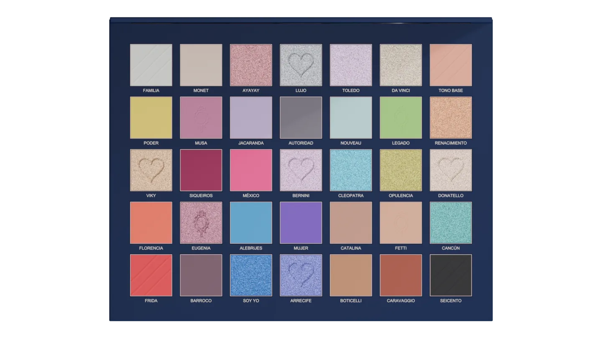
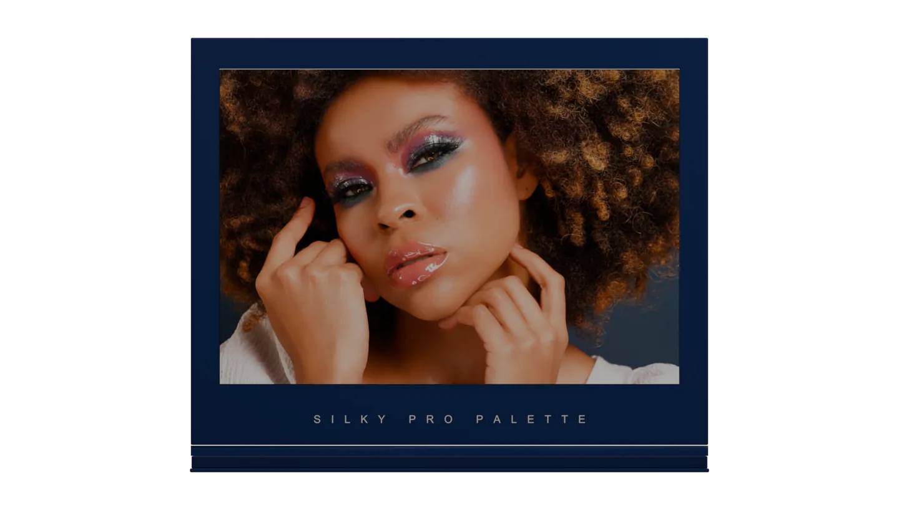
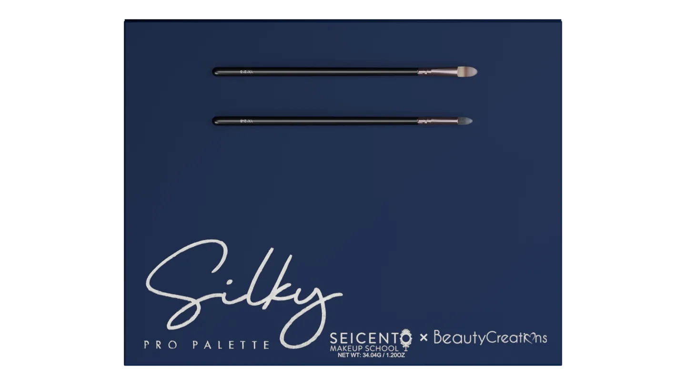
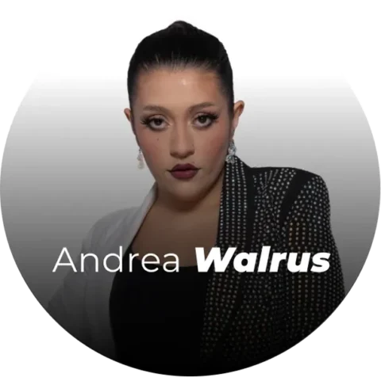
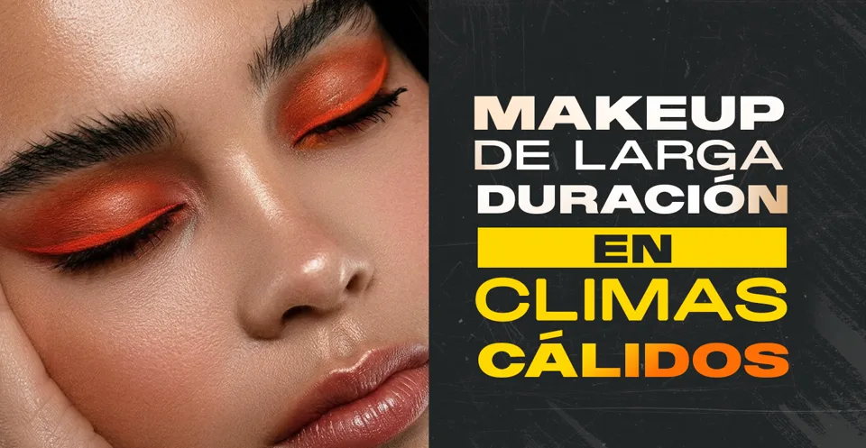

35 tonos.
El look es tuyo.
Neutros, pasteles y colores vivos. Explora combinaciones y practica nuevas técnicas con una misma paleta.
Seicento Makeup School · Ciudad de México
Carreras y especialidades en maquillaje. Aprende haciendo, crea tu portafolio y prepárate para dar el siguiente paso.


+20,000egresados
Reforma y Coyoacándos campus en CDMX
Formación con respaldoprogramas incorporados a la SEP
Carreras profesionales
Empieza desde cero o lleva tu técnica más lejos. Elige el maquillaje al que quieres dedicarte.
Amplía tus técnicas de maquillaje y explora distintas especialidades en un mismo programa.
Conocer la carrera Para empezar desde los fundamentos 12 mesesAprende las bases y avanza hacia nuevas técnicas. Tu experiencia previa puede ser cero.
Conocer la carrera Para crear looks de ocasión 9 mesesPiel, acabados y estilo personal. Aprende a maquillar para eventos y novias.
Conocer la carreraCompara duración, campus y horarios. Te ayudamos a encontrar el grupo que va contigo.
Ver toda la oferta educativaLa colaboración de Seicento y Beauty Creations.
35 tonos, espejo integrado y dos brochas incluidas.

Color, acabados y detalles que acompañan tu práctica.
Neutros, pasteles y colores vivos. Explora combinaciones y practica nuevas técnicas con una misma paleta.
Construye profundidad con los mates. Añade acentos con los tonos brillantes.
Sigue la aplicación y revisa el resultado desde la propia paleta.

Una transición suave. Un contraste de color. Practica con tonos neutros o explora combinaciones más atrevidas.
Del color a la aplicación. Tu paleta viene acompañada de dos brochas para poner tus ideas en práctica.

Educación continua
Empieza, profundiza o explora algo nuevo. Encuentra el formato para lo que quieres aprender.
Tres intensivos de maquillaje social. Elige el que quieres conocer y consulta con admisiones cuál se ajusta a ti.
Dale una base a tu pasión. Dedica tiempo a conocer y practicar el maquillaje social.
Lleva tu interés por el glam a una nueva etapa de práctica en maquillaje social.
Sigue explorando el maquillaje social con un formato concentrado en 60 horas.
Automaquillaje, color, novias o caracterización. Descubre una selección de talleres y encuentra tu siguiente tema.
Dedica una sesión a tu propia forma de maquillarte.
Haz de los ojos el centro de tu próxima práctica.
Explora el maquillaje de novias desde el estilo glam.
Amplía tu mirada sobre el color y sus combinaciones.
Acércate al maquillaje beauty para cine UHD.
Dale espacio a las líneas, las formas y el color.
Centra tu práctica en el maquillaje de pieles maduras.
Explora la transformación a través del maquillaje.
Elige un área y dale un lugar propio en tu formación. De novias a efectos especiales, explora las 14 opciones.
Método Seicento 3D3
Mira cómo se hace. Practica. Recibe retroalimentación. El Método Seicento 3D3 da a la práctica el mayor espacio dentro de tu carrera.
Conoce nuestro métodoEjercitar, corregir y repetir hasta hacer tuya cada técnica.
Aprender desde demostraciones y acompañamiento docente.
Construir criterio, referencias y una mirada creativa.
La experiencia Seicento
De repasar una clase a fotografiar tu primer book. Así acompañamos tu formación.
Un espacio digital para volver a los contenidos y seguir estudiando entre clases.
Acércate a producciones y experiencias donde puedas aplicar lo aprendido y colaborar con otras personas.
Documenta tu evolución y presenta el trabajo que quieres llevar al mundo.
Conoce cómo se ve tu maquillaje frente a la cámara y crea imágenes para presentar tus proyectos.
Accede a descuentos para la comunidad Seicento en productos y herramientas de maquillaje.
Amplía tus referencias con encuentros, talleres y nuevas formas de abordar el maquillaje.
La disponibilidad, los requisitos y los costos de estos recursos dependen del programa. Conoce los beneficios de la carrera que elijas.
Descubre la experienciaMás allá de la formación
Tu portafolio. Tus servicios. A la vista de posibles clientes. Pro Beauty conecta a maquilladores de Seicento con personas que buscan un profesional.
Conocer Pro BeautyMaquillaje en acción
Color, textura y caracterización en las producciones de Seicento. Descubre lo que crea nuestra comunidad.
Comunidad Seicento
Más de 20,000 egresados han pasado por Seicento. Conoce sus trabajos finales, prácticas y caminos dentro del maquillaje.
Inspírate en sus procesos. Imagina tu siguiente proyecto.
Conoce a nuestra comunidadReconocimiento académico
Dale respaldo a lo que sabes hacer. Conoce los programas incorporados a la SEP y las opciones de evaluación y certificación de Seicento.
Conocer acreditacionesSeicento cuenta con programas incorporados a la Secretaría de Educación Pública.
Centro evaluador de estándares de competencia laboral.
Opción de certificación para Integral de 12 meses y Pro Master de 14 meses, con requisitos académicos específicos.
El reconocimiento, la certificación y sus requisitos varían según el programa.
La comunidad que enseña
Profesionales que comparten su técnica, sus referencias y lo que han aprendido trabajando en maquillaje.

Ciudad de México
¿Quieres conocer el espacio antes de elegir tu programa?
Agenda una visitaClase muestra gratuita
Conoce la escuela desde dentro. Vive una clase muestra gratuita y descubre cómo sería estudiar aquí.
Quiero vivir la experienciaTe esperamos en Campus Reforma para conocer la escuela, compartir una experiencia de maquillaje y acercarte a nuestra comunidad.
Registra tu interés y recibe la información de la próxima sesión.
Consultar próxima sesiónDesde la comunidad
Cómo presentar tu trabajo y por qué un buen portafolio puede abrirte puertas en el maquillaje.
Leer artículo ↗ Historias SeicentoConoce su recorrido dentro de la escuela y cómo ha seguido creciendo junto a la comunidad.
Conocer su historia ↗
Técnica y prácticaPreparación de la piel, texturas y fijación para crear looks de larga duración en climas cálidos.
Explorar consejos ↗Antes de empezar
Lo que necesitas saber para elegir tu programa y preparar tu primer día.
Hablar con admisionesSí. La Carrera Integral comienza con los fundamentos y no requiere experiencia previa. También puedes explorar el Intensivo Principiante si buscas un formato concentrado para dar tus primeros pasos.
Maquillaje Social tiene una opción de 6 meses; Social y Novias, de 9 y 12 meses; Integral, Integral + FX e Integral + Editorial, de 12 meses; y Pro Master, de 14 meses. Revisa las opciones de campus y grupo en la oferta de carreras.
Las especialidades de 48 horas te permiten profundizar en áreas como novias, editorial, cine y TV, aerógrafo o FX. También hay intensivos Glam Avanzado y Experto, además de talleres sobre técnicas específicas. Admisiones puede orientarte según lo que ya dominas.
La oferta incluye grupos entre semana y de fin de semana, con horarios matutinos, vespertinos o nocturnos según el programa. Consulta el calendario de próximos inicios para encontrar tu combinación de carrera, campus y horario.
Seicento ofrece opciones en línea, como Social y Novias y algunos talleres. La modalidad depende del programa y del grupo; pregunta por la oferta en línea si no puedes asistir a Reforma o Coyoacán.
Las carreras profesionales siguen el Método Seicento 3D3: 70 % práctica, 20 % técnica y 10 % fundamentos. Combina demostraciones, ejercicios y retroalimentación para que aprendas haciendo y desarrolles criterio al maquillar.
En la Carrera Integral no necesitas reunir todo el kit desde el primer día: los productos y materiales se solicitan de forma gradual. Pide la lista de tu grupo antes de comprar para conocer qué llevar a las primeras clases.
Es la plataforma digital de Seicento para consultar contenidos de apoyo y repasar entre clases. Su acceso y costo dependen del programa; algunas carreras lo contemplan como un cargo adicional. Pide que se detalle en tu cotización.
La experiencia Seicento incluye proyectos, prácticas y recursos como el estudio fotográfico para documentar tu trabajo. Las actividades y condiciones dependen de la carrera. Puedes conocer ejemplos reales en la comunidad de estudiantes y egresados.
Pro Beauty es una plataforma para mostrar tu portafolio y tus servicios a personas que buscan un maquillador. Conoce los requisitos para participar y empieza a dar visibilidad a tu trabajo desde el programa Pro Beauty.
Silky Pro Palette es la colaboración de Seicento y Beauty Creations: una paleta de 35 tonos, con acabados mate y brillantes, colores neutros y vivos, espejo integrado y dos brochas incluidas. Descubre sus detalles en la sección de la colaboración.
La inversión cambia según la carrera, el campus y el grupo. En programas como Integral puedes elegir pago total más inscripción, o comenzar con la primera colegiatura más inscripción. Solicita una cotización con colegiaturas, materiales y cargos adicionales para planear tu inversión.
Seicento cuenta con programas incorporados a la SEP y publica los registros de Realiza Maquillaje Profesional y Maquillaje del Rostro. El reconocimiento depende del programa que curses; puedes revisar la información de incorporación y confirmar qué documento obtendrás al terminar.
La escuela ofrece esta opción para Integral de 12 meses y Pro Master de 14 meses. Entre los requisitos publicados están cursar las materias artísticas, contar con la acreditación SEP, cumplir 90 % de asistencia, promedio mínimo de 9 y los exámenes prácticos. Revisa las condiciones de IUM para conocer el proceso completo.
Sí. Puedes solicitar una visita y conocer la clase muestra gratuita. El Brunch + Masterclass de Campus Reforma te permite acercarte a la experiencia Seicento. Registra tu interés para recibir información de la próxima sesión.
Reforma está en Londres 102, planta alta, colonia Juárez, Cuauhtémoc. Coyoacán está en Av. Miguel Ángel de Quevedo 773, San Francisco, Coyoacán. Ambos están en Ciudad de México. Encuentra teléfonos y recorridos en la sección de campus.
Hablemos de tu siguiente paso
Cuéntanos qué quieres aprender. Te orientamos con el programa, el campus y el próximo inicio.
¿Prefieres hablar directamente?
WhatsApp · 56 5790 7961